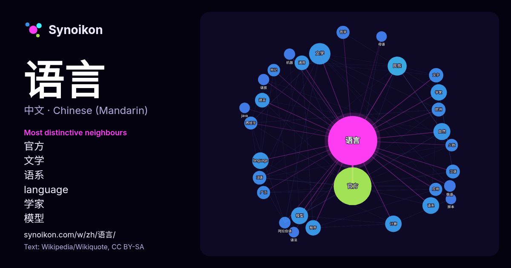

中文 · 热门词
语言
“language” · 来自维基百科, Wikiquote 1645 次出现中其周围的词。

最具特色的邻近词
- 官方 82×
- 文学 42×
- 语系 37×
- language 35×
- 学家 27×
- 模型 24×
- 通用 23×
- 汉语 23×
- 法语 22×
- 民族 22×
- 计算 21×
- 标记 20×
- 自然 18×
- 阿拉伯语 18×
- 哲学 18×
- 俄语 18×
- 语族 17×
- 文字 17×
- 程序 17×
- 語言 16×
× = 比维基百科普通文本中多出的倍数。
最常见的邻近词
- 官方 194
- 使用 112
- 文学 62
- 主要 57
- 民族 49
- 不同 42
- 包括 42
- 模型 39
- 自然 39
- 语系 38
- language 37
- 计算 37
- 也是 36
- 国家 36
- 学家 36
- 研究 34
- 中国 33
- 程序 32
- 设计 31
- 文化 30
上下文
- 语言学测试并研究人类大脑神经对于语言的理解、产出和习得；计算语言学基于描写语言学和理论语言学，构建语言的计算机模型来处理自然语言，测试语言学假说；而历史语言学利用词汇和语法描述追溯个别语言的历史，并常利用比较语言学的研究方法重构语言谱系。 一般认为，正式意义上的语言 Wikipedia snippets · 語言
- ɪθɑːn/），是一种广泛使用的解释型、高级和通用的编程语言。Python支持多种编程范型，包括结构化、过程式、反射式、面向对象和函数式编程。它拥有动态类型系统和垃圾回收功能，能够自动管理内存使用，并且其本身拥有一个巨大而广泛的标准库。它的语言结构以及面向对象的方法，旨在帮助程序员为小型的和大型的项目编写逻辑清晰的代码。 Wikipedia snippets · Python
- 語言哲學是一門哲學的分支，對語言的用法、來源及本質作理性的研究。對於分析哲學來說，有四個主要關心的問題：意義的本質、語言用法、語言認知及語言與現實的關係。對分析哲學家來說，語言哲學是邏輯、歷史甚至政治的一部分。 在二十世纪初“语言学转向”中诞生的分析哲学将语言 Wikipedia snippets · 语言哲学
- 语言属于汉藏语系的藏缅语族和南亞語系蒙達語族，以及其他一些孤立语言。 印度現時主要官方语言是印地语，第二官方语言为英语，印度宪法规定“联邦官方语言为使用天城体字母的印地语”，但没有任何法律规定正式全国通用语言。 印度憲法附表八列出了22種語言法定受保護語言，同時亦有另外六種官方認定的古典語言。 Wikipedia snippets · 印度语言
- 中國大陸大部分语言学家认为汉语是一种单一的语言，但许多外国语言学家和中国内地的小部分语言学家认为漢語作為語族，是官话、粵語、吳語、閩語、客家话等語言的統稱，即汉语是由一簇亲属语言所组成的语族，為一种语言类别。 在語言學原則上，互相之間不能通話的應該被定性為語言 Wikipedia snippets · 汉语
- C语言（英語：C Language）是一种通用的、过程式编程程式語言，支持结构化编程、词法作用域和递归，使用静态类型系统，并且广泛用于系统软件与应用软件的开发。 C语言于1969年至1973年間，為了移植與開發UNIX作業系統，由丹尼斯·里奇與肯·汤普逊，以B语言 Wikipedia snippets · C语言
- … 用的電腦程式設計語言，擁有跨平台、物件導向、泛型程式設計的特性，广泛应用于企业级Web应用开发和移动应用开发。 任職於昇陽電腦的詹姆斯·高斯林等人于1990年代初开发Java語言的雛形，最初被命名为Oak，目標設定在家用电器等小型系統的程式语言 Wikipedia snippets · Java
- 编程语言（英語：programming language）是用来表達计算机程序的電腦語言。它是一套标准化的交流技巧，一种能够让程序员准确地定义计算机所需数据的语言，以向计算机发出指令并精确地定义不同情况下应当采取的行动。 最早的编程语言早在電腦發明前就已問世，當時是用來控制提花織布機（英语：Jacquard Wikipedia snippets · 编程语言
更多词
于 2026-10-09 以默认设置预先计算（±5 个词，中等语料）。交互式图可用实时数据刷新。
界面为机器翻译，欢迎指正。